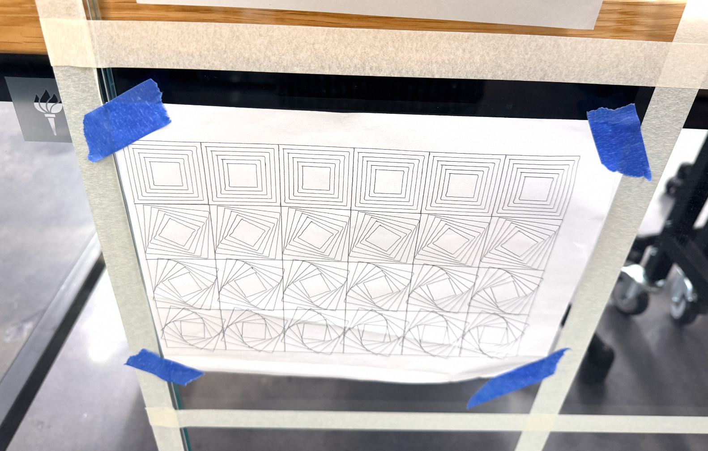

The photo of my finished pen plotter pieces.

For sketch1, Click anywhere to reveal a random number that gradually fades away. Each number appears only once until all numbers have been picked.
For sketch2, Move your mouse over the grid to highlight a square in yellow. Click anywhere to randomly change the shade of yellow.
For sketch3, Move your mouse to leave glowing red trails that gradually fade away.
For sketch4, Move your mouse to create a glowing orange-yellow trail. Nearby cells light up based on their distance from the cursor and gradually fade away. 你喜欢这种个性吗？
For sketch5,
For sketch6,
For sketch7,更新后的作业